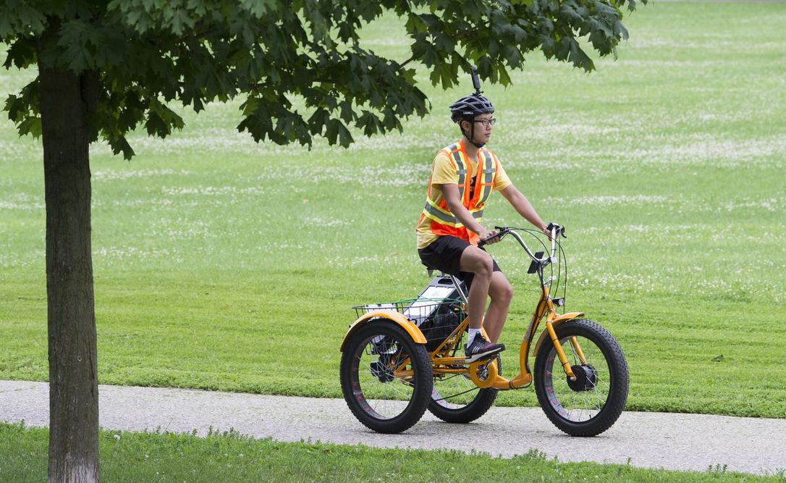

Kitchener is located about 100km west of Toronto and is one of the 3 cities that make up the Regional Municipality of Waterloo. With goals of building a smart city, Digital Kitchener has constructed innovatively strategies and developed technologies to benefit the lives of residents. Digital Kitchener’s innovation Lab creates new ideas and thinking to solve challenges and improve the city’s living quality, some of the projects are: air quality monitoring, traffic monitoring, 360 street view and 3D city building models.
About My ManagerThis summer I am working under the leadership of Digital Kitchener’s Innovation Lab Director, Courtney Zinn. As the lab director, Courtney provides directions for lab members with their projects, and resolves any difficulties that members encounter.
Job DescriptionThe project I am working on is 360 Street View, which collects imagery of Kitchener’s 125km of pathways and publishes on Google Street View. The main goal of the project is to increase publicity of those trails so that local residents can take good advantage of the resources when travelling in the city.
It was a unique Co-op as I did not spend all of my time working in front of a screen. Moreover, I’ve spent more time outside than inside. My responsibility can be separated into outdoor and indoor: recording multi-use pathway footage, performing face & car license plates automation and publishing the connected trail footages onto Google Streets View. To record the trail imagery, I rode an electric tricycle with a 360 camera attached to my helmet. After photos are collected, I then use a python recognition script to automatically detect faces and license plates to apply a gaussian blur. Along with python, I used a few machine learning libraries such as tensorflow, openCV and imageAI for better confidence in recognition. Afterwards we then perform a manual check on the pictures to ensure all faces and plates are blurred, and remove any pictures that contain playgrounds in use or offensive graffiti. Lastly we connect the pictures on GoThru and publish them on Street view, this way everyone can check out the amazing paths within the city. For privacy reasons, all local captures will be deleted.
GoalsThere are some great technologies that I will be using on this job and I have developed goals related to the tasks.
My initial goal on this job is to learn and master the technologies required for this job including camera operation pairing with apps and successfully blurring faces. To master those tools, I spent some time learning tutorials and experimenting with them. This also helps debug whenever the tools malfunction.
This job also has a significant amount of communication, including project presentations, daily stand-ups, and progress check-ins. I wasn’t very comfortable and stuttered quite a bit in the first few presentations so I’ve set the goal of improving my oral communication and presentation skills over the term. To improve on it, I briefly organized and practiced my scripts before any meetings. Sometimes I would mix my flavor of humor into the presentations to engage the audiences positively.
Working as a city staff also means I am representing the city when I am outside. It requires a lot of communications with the civilians during capturing, for example giving people notices prior to capture a segment and answering any questions they have on the project. My goal here is to be respectful and helpful when I am out in the public.
ConclusionI spent a valuable time working with the City of Kitchener and contributed to the project’s publicity including media interviews with CTV, CBC and Waterloo Records. It was an unique experience that not only boosted my technical skills but also helped me regain my social and communication skills.
AcknowledgmentsI want to thank my Manager, Courtney Zinn and the team, giving me this precious opportunity and working with me through my Co-op term during this tough period. We've overcome some ups and downs and had an unforgettable moment!
Thanks to Laura Gatto, my Co-op coordinator for coordinating.
Thank you for your time reading! Last but not least, I want to thank Greg Klotz for helping me with my academic and Co-op related inquiries. Without him, I would never get these precious experiences.
End Home